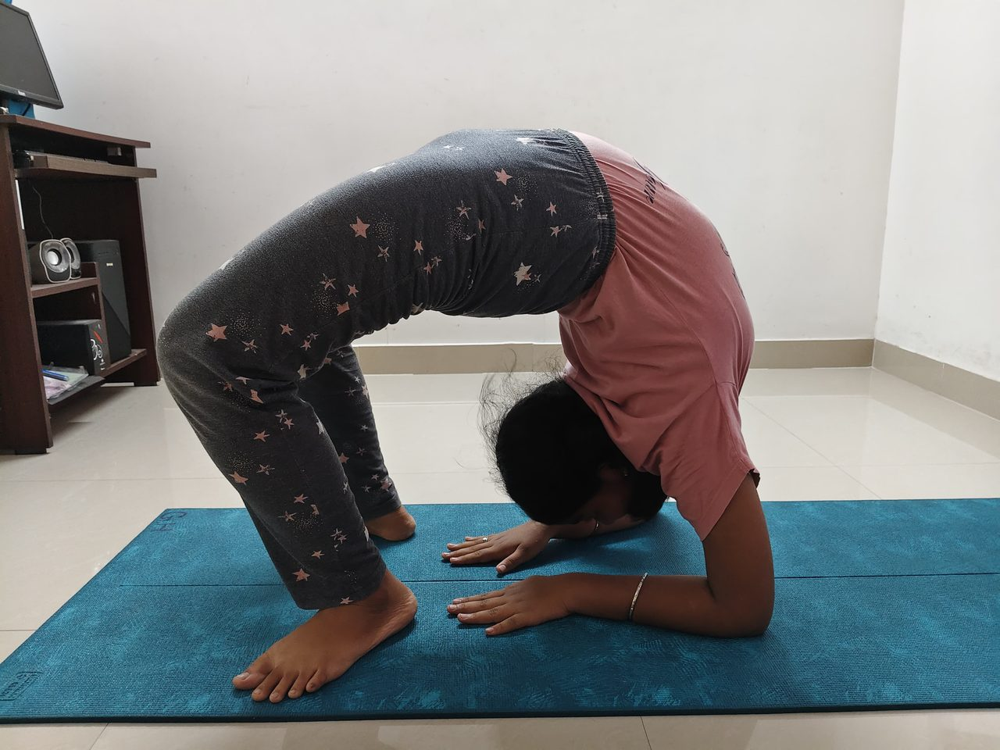

How many days a week should you do yoga?
The honest answer is not the one that sounds most impressive. Four ordinary mornings beat two heroic ones, and the number you can keep is worth more than the number you can manage.

The number most people land on
Almost everyone who walks in asks some version of this, usually phrased as how much is enough. Three to four sessions a week is where most of our students settle, and it is where most of them start noticing something — sleeping better, standing straighter, getting out of a chair without thinking about it.
Twice a week is not wasted. It is slower, and it holds ground rather than gaining much, but it is a real practice. Once a week is maintenance: pleasant, better than nothing, and unlikely to change how your back feels in March.
Why the answer is not seven
Practising every single day sounds like the committed choice. In our experience it is the one most likely to end by week three. A schedule with no slack in it breaks the first time a child is ill or a deadline moves, and people rarely restart at five days — they restart at zero.
The World Health Organization's guidance for adults is 150 to 300 minutes of moderate activity a week. Four hour-long batches sits inside that comfortably, without needing a perfect week to reach it. WHO physical activity guidance
Pick for your worst week, not your best
This is the only planning advice we give that reliably works. Do not choose the schedule you could keep in a calm month. Choose the one that survives a bad week — and then anything above it is a bonus rather than a failure.
In practice that usually means committing to three, turning up four or five times when the week allows, and not treating a missed Tuesday as the end of the thing.
What a realistic week looks like here
- Three mornings. The most common pattern. Enough to build, easy enough to protect.
- Four or five. What people move to once the habit is set, usually without deciding to.
- Two, plus something at home. Works if the two are consistent. Ten minutes of breathing on the other days does more than an occasional long session.
Batches run Monday to Friday, four times a day, so there is no single slot you have to defend. If you miss the 6:15 am, the 5:00 pm exists.
Does it have to be a class?
No, but a class is what most people actually turn up to. Practising alone asks you to supply the time, the sequence and the motivation; a batch at a fixed hour supplies two of the three. That is most of why attendance beats intention.
It also means someone is watching your form. Doing the wrong thing three times a week is worse than doing the right thing twice.
Common questions
- Is 20 minutes a day better than an hour three times a week?
- For building a habit, yes. For building strength and mobility, the longer sessions do more, because a full hour has room for warm-up, asanas, pranayama and relaxation rather than a rushed version of each.
- How soon will I feel a difference?
- Most of our students say they sleep better and feel less stiff within two or three weeks of practising regularly. That is our students talking, not a study. Physical changes take longer.
- Should I practise if I am sore?
- Mild stiffness, yes — it usually eases within the warm-up. Sharp or joint pain, no. Tell the teacher instead and the practice gets adjusted.
- Can I come every day if I want to?
- Yes. Batches run five days a week and plenty of members come to all five. We would rather you built up to it than started there.
Come and try a batch
Four batches a day, Monday to Friday, at our centre in New Perungalathur.